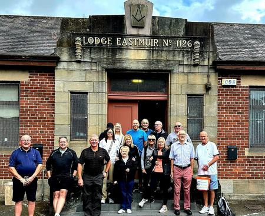
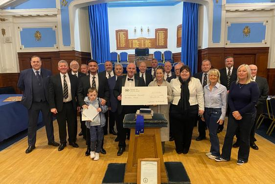
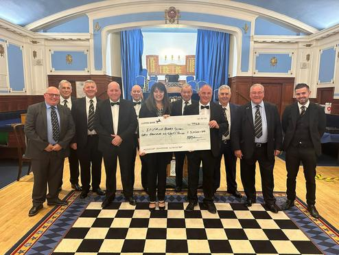
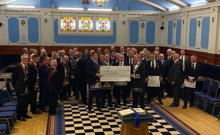
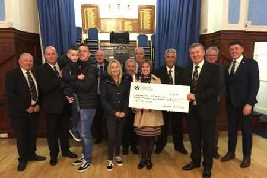
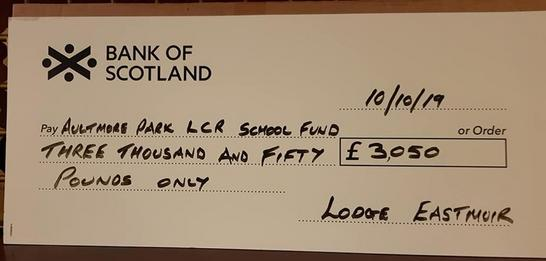
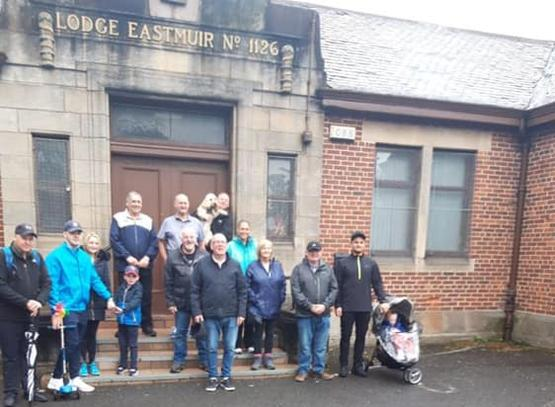
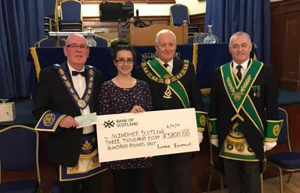

Sponsored Walk 2024 On Saturday 27th July 2024, Lodge Eastmuir No.1126 once again had their Annual Sponsored walk in aid of the Lodges Nominated Charity. This year the charity is Caledonia School LCR Unit in Baillieston. The Lodge have supported such schools locally over the last few years and were happy to do so once again. Members and friends walked from Lodge Eastmuir's premises to Lodge St.Brydes No.579 in Uddingston, after a small break and refreshment the brethren and ladies made their way back to the Lodge via Lodge Robert Burns No.440. The lodge has a close contact with the school as the son of one of our members attends there. On Thursday 21st November the IPM Stuart McManus was pleased to hand over a cheque for £4,100 to the Head Mistress of the School and she expressed her grateful thanks. She commented that the donation would be put to good use and that she would write to us outlining how the money was spent to benefit the children. |
Sponsored Walk 2023On Saturday 20th May 2023, Lodge Eastmuir No.1126 had their Annual Sponsored walk in aid of the Lodges Nominated Charity. This year the charity is Eastmuir School in Barlanark. The school is for kids that have challenging and special needs. The Lodge have supported the school over many years and this year is no different. On the day 20 people made up of brethren, wives and friends took to the pavement and walked from Lodge Eastmuir premises to Lodge St.Brydes No.579 in Uddingston, after a small break and refreshment the brethren and ladies made their way back to the Lodge via Lodge Robert Burns No.440. Lodge Robert Burns kindly put on some refreshments and a bite to eat for all. After all the monies were received and counted the Master Brother Stuart McManus was delighted to hand over a Cheque for £3,020 to the Fiona Welsh Deputy Head of the school. |
Sponsored Walk 2022This year our Sponsored Walk on behalf of SANDS raised the magnificant sum of £4,375. A big thanks to everyone who supported this great cause. The picture shows the cheque being presented to our RWM David Wheatley by our Senior Deacon Darren Bambridge. |
Sponsored Walk 2019 The final amount raised this year for Aultmore School was a fantastic £3.050. The RWM brother Ian Haldane is pictured presenting the cheque to the school along with some of the brethren. |
Sponsored Walk 2019Our charity fund raising this year took place on Saturday 18th May from our Lodge in Shettleston to Lodge St Bryde (Uddingston) on behalf of Aultmore Primary School in Easterhouse who provide an education service for Autistic Children. The money is still being collected and the amount raised will be published soon. Some of the walkers are shown in the photograph below. The RWM would like to thank all the walkers and those who donated money. |
Sponsored Walk 2018Our Annual Sponsored Walk from Shettleston to Uddingston (and back again if you can make it), will take place on Saturday 12th May. This year it is in aid of Alzheimer Scotland who provide a wide range of specialist services for people with Dementia and their carers. Presentation of the cheque for £3,800 to Alzeimers Scotland. Along with our RWM were the RWPGM James Peddie and WSPGM William Newlands. |